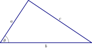
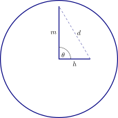

The Palace of Westminster in London has a large clock tower. The minute
hand is meters long and the hour hand is meters long. At what rate is the
distance between the tip of the hands is changing when the clock strikes pm?
Recall the
Law of Cosines: Given a triangle with sides lengths , , and ,

we then have
To start, we
draw a picture.

Now we must
find equations that combine relevant functions. Initially we might
suppose that however, here is function of time, so this relationship only holds for
certain times. Hence we must use the Law of Cosines to write To find , imagine we
are measuring the angle starting at “twelve o’clock” with being measured in hours.
Then letting be the angle made by the minute hand and be the angle made by the
hour hand we have
Finally since is decreasing, as the minute hand is traveling faster than the
hour hand, On the other hand, and are constants. We may now write If
differentiate the equations using implicit differentiation we find and Now we
evaluate and solve. We know that , , , and since the time is pm, . Thus
on the other hand and so This is the desired rate in units of meters per
hour.
 Next we need to find equations. By the Pythagorean Theorem we know that
Imagining that and are functions of time, we now differentiate the equation.
Write Now we’ll evaluate and solve. We are interested in the time at which and .
Additionally, at this time we know that , so . Putting together all the information we
get thus mph.
Next we need to find equations. By the Pythagorean Theorem we know that
Imagining that and are functions of time, we now differentiate the equation.
Write Now we’ll evaluate and solve. We are interested in the time at which and .
Additionally, at this time we know that , so . Putting together all the information we
get thus mph.